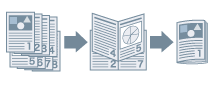

Отпечатанные документы можно переплести в буклет. Для этого на каждой стороне листа бумаги печатаются 2 страницы документа, а затем из отпечатанных и сложенных вдвое листов формируется буклет (на одном листе бумаги печатаются 4 страницы документа).

1.
Откройте вкладку [Основные настройки] или [Окончательная обработка].
2.
Выберите способ печати.
Во вкладке [Основные настройки]: выберите [Печать односторонняя/двухсторонняя/буклет] - [Печать буклета] - нажмите [Буклет]
Во вкладке [Окончательная обработка]: выберите [Стиль печати] - [Печать буклета] - нажмите [Буклет]
3.
Выберите [Указать поле переплета буклета] → укажите ширину поля переплета в [Поле переплета буклета] → нажмите [ОК].
4.
При выполнении переплета внакидку выберите метод окончательной обработки в меню
[Настройки переплета внакидку].
Чтобы выровнять край буклета, обрезав страницы по краю, выберите [Сгиб + переплет внакидку + обрезка] → настройте
[Настроить ширину обрезки по]/[Настройки обрезки].
Коррекция сползания (смещения)
Если при печати буклета нужно обрезать края страниц торцовым станком, можно отрегулировать величину поля таким образом, чтобы положение данных для печати на разных страницах не отклонялось.
1.
Откройте вкладку [Основные настройки] или [Окончательная обработка].
2.
Выберите способ печати.
Во вкладке [Основные настройки]: выберите [Печать односторонняя/двухсторонняя/буклет] - [Печать буклета] - нажмите [Буклет]
Во вкладке [Окончательная обработка]: выберите [Стиль печати] - [Печать буклета] - нажмите [Буклет]
3.
Выберите [Процесс печати буклета] → [С настройками устройства].
4.
Выберите
[Использовать коррекцию сползания (смещения)] → установите [Способ коррекции смещения] → нажмите [ОК].
|
Эта функция доступна для форматов бумаги A4, B4, A3 и 11x17.
|
Необходимые параметры
Переплет внакидку: прошивочный финишер
Обрезка передней части (Указать ширину окончательной обработки): прошивочный финишер и торцовый станок
Обрезка в трех направлениях (Указать ширину и высоту окончательной обработки): прошивочный финишер, торцовый станок и торцовый станок для буклета с двумя лезвиями
Функции, недоступные в сочетании с данной функцией
Вкладка [Основные настройки] или [Макет страницы] → [Разметка страницы] → [N на 1] (N = 6, 8, 9 или 16) (когда [Буферизация на хост-компьютере] → [Отключена] выбрано на вкладке [Настройки устройства])
Вкладка [Основные настройки] или [Макет страницы] → [Ручная настройка масштаба]
Вкладка [Основные настройки] или [Окончательная обработка] → [Окончательная обработка] → [Разобрать]/[Сшивание + pазобрать]/[Эко (без сшивания) + разобрать]/[Сшивание и pазобрать]
Вкладка [Основные настройки] или [Окончательная обработка] → [Окончательная обработка] → [Группирование]/[Сшивание + группирование]/[Эко (без сшивания) + группирование]/[Сшивание и группирование]
Вкладка [Окончательная обработка] → [Печать на бумаге разных форматов/ориентации]
Справки
В зависимости от версии функции используемого принтера обрезка страниц может не удаться.
Выбирайте это значение [С настройками приложения] для [Процесс печати буклета] только при определении настроек печати из приложения. Кроме того, в этом случае для [Формат страницы] можно выбрать любой формат бумаги, кроме открытки, конверта, SRA3 и специального формата бумаги [Формат страницы].
При выборе параметра [С настройками устройства] для [Процесс печати буклета] доступны следующие форматы бумаги: A4, B4, A3 и 11x17.
Если данная функция используется совместно с функцией печати с наложением, документ может быть распечатан неправильно.
[Настроить ширину обрезки по]/[Настройки обрезки] можно задавать только во вкладке [Окончательная обработка].